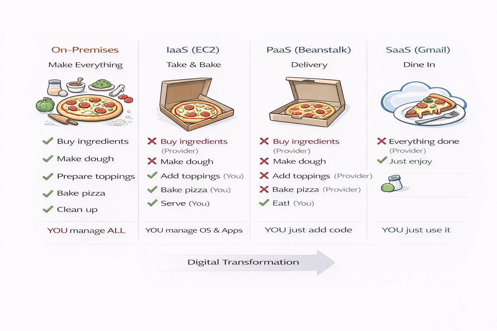

Understanding Cloud Deployment & Service Models
Shared infrastructure, AWS/Azure/GCP
Use for: Web apps, startups, scalability
Dedicated, single organization
Use for: Banks, healthcare, compliance
Combines public + private
Use for: Sensitive data + scalability
Shared by similar organizations
Use for: Universities, research
| Aspect | Traditional Data Center | Cloud Computing |
|---|---|---|
| Ownership | You own everything | Provider owns, you rent |
| Provisioning | Days to weeks | Minutes |
| Scaling | Buy new hardware | Click button |
| Cost Model | CapEx (upfront) | OpEx (pay-as-you-go) |
| Utilization | 10-15% | 60-80% |
Key Difference: Cloud = HOW resources are delivered (on-demand, elastic, automated)

Take & Bake
You manage: OS, Apps, Data
Example: EC2
Delivery
You manage: Code, Data
Example: Elastic Beanstalk
Dine In
You manage: Just your data
Example: Gmail
You manage: OS patches, security, apps
AWS manages: OS, runtime, scaling
AWS manages: Everything!
🎯 Remember: You are ALWAYS responsible for data and access control!
| Component | IaaS (EC2) | PaaS (RDS) | SaaS (WorkMail) |
|---|---|---|---|
| Physical Security | AWS | AWS | AWS |
| Hardware | AWS | AWS | AWS |
| Operating System | YOU | AWS | AWS |
| Applications | YOU | YOU (code) | AWS |
| Data | YOU | YOU | YOU |
| Access Control | YOU | YOU | YOU |
Virtualization: Technology that allows multiple virtual machines to run on a single physical server
Result: 80% reduction in hardware, power, and space costs!
VM1: Windows | VM2: Linux | VM3: Ubuntu
Each with own OS, isolated from others
Manages resources, maintains isolation
AWS uses: Nitro System
32 CPU cores | 256 GB RAM | 4 TB Storage
Installed: Directly on hardware
Performance: ⚡ Best
Examples:
Used in: Production clouds
Installed: On existing OS
Performance: 🐢 Good
Examples:
Used in: Development, testing
This is why AWS can offer $0.10/hour pricing!
50 physical servers
10 physical servers + 50 VMs
💵 Annual Savings: $70,892 | Payback: 10 months!
💡 Public Cloud: Shared infrastructure, multi-tenant, pay-as-you-go. Examples: AWS, Azure, GCP.
💡 Service Models: IaaS = you patch OS | PaaS = AWS patches | SaaS = AWS manages all.
💡 Always Customer Responsibility: Data, encryption keys, access control (IAM), regardless of service model.
💡 Virtualization: Increases utilization from 10-15% to 60-80%. Type 1 hypervisors for production.
💡 AWS Nitro System: Custom hypervisor with near-bare-metal performance.
👍 Like | 🔔 Subscribe | 💬 Comment Below
📚 Free Complete Study Notes
📝 35 Practice MCQs
✅ Learning Checklist
Next Video: Scalability vs Elasticity + AWS Global Infrastructure